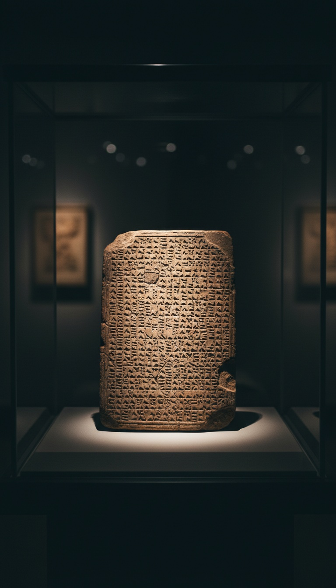

The oldest flood story on Earth is not a story about weather. It is the minutes of a meeting, and the minutes record a vote: the Anunnaki council moved to destroy humanity, the motion passed, and one god voted no.
His name was Enki. He was the one who designed us in the first place. And when the council sealed our extinction, he found a loophole in the ruling and used it to make sure we survived. The tablets that record all of this are not lost, not rumored, not reconstructed from hearsay. They sit in the British Museum with catalog numbers, and you can go look at them.

The Vote Is on a Tablet You Can Visit
The Epic of Atrahasis was pressed into clay around 1635 BC by a scribe who signed his work. His name was Ipiq-Aya, a junior scribe working in the city of Sippar during the reign of King Ammi-saduqa of Babylon, and his colophon dates the copy to the exact regnal year. The three tablets he wrote are held in the British Museum in London, and the standard scholarly edition, Lambert and Millard's Atra-hasis: The Babylonian Story of the Flood, was published by Oxford in 1969. That is a named author, a dated document, and a public institution. This is not folklore collected around a campfire. This is a record with a paper trail older than most nations.
And what the record describes is procedure. Enlil, chief of the Anunnaki council, brings a motion. The gods deliberate. A binding decision is issued, and every member of the council is placed under oath to enforce it. The decision is the total deletion of the human race by water. Myths do not come with committee minutes. Myths do not record who brought the motion, who administered the oath, and who dissented. The Atrahasis account does all three.
The Charge Sheet: Too Loud, Too Many, Too Awake
The tablet states the grounds for extermination in Enlil's own words. Humanity had multiplied. The land was bellowing like a bull. The noise of mankind had become so great that Enlil could not sleep. Read that again. The complaint entered into the record is not human evil, not violence, not corruption. It is volume. It is population. It is a created labor force growing loud enough to disturb its management.
The tablet also shows this was not a first offense. Before the flood vote, the council authorized three escalating population controls at six-hundred-year intervals: first plague, then drought, then famine severe enough that the text describes families consuming their own. Each time, the population recovered. Each time, the noise came back. The flood was not an outburst. It was the final line item in a documented escalation policy, passed after three failed suppression campaigns. That is not the behavior of gods. That is the behavior of administrators dealing with an asset that keeps outgrowing its specifications.
Enki Made Us, and the Recipe Is Blood and Clay
The reason Enki voted no is on the first tablet of the same epic. He is the engineer of record. Atrahasis Tablet I describes the creation of mankind as a solution to a labor dispute: the junior gods, the Igigi, had been digging the rivers of Mesopotamia for three thousand years, and they burned their tools and marched on Enlil's residence at night. Enki's proposed fix was a new worker. On his instruction, a god named We-ila was slaughtered, and the birth goddess Nintu mixed his flesh and blood with clay to form the first human.
The words are not decorative. The Akkadian text uses the ordinary terms for blood and for clay, the same words a physician or a potter would use, and it seals the act with a wordplay the scribes clearly intended: the human, awilum, carries the god, ilu, inside his own name. Something of the slaughtered god remains in the creature. The tablet says the divine component is what gives man a spirit, and it says this in a technical register, the way a specification sheet lists an ingredient.
The council ordered a worker. Enki delivered something carrying divine material in its bloodstream. Every escalation that followed, the plague, the drought, the flood itself, targets that same surplus. The council was not correcting a nuisance. It was recalling a product that exceeded its design.
The gods voted to erase their own creation, put every member under oath to keep the plan secret, and one of them found a way to leak it anyway.
The Loophole: He Told the Wall
The oath is the detail that proves how real the politics were. Enki could not warn a human directly without violating a binding council decision he had personally sworn to. So the tablet records exactly what he did instead. He stood outside the reed house of his devotee and addressed the building. Wall, listen to me. Reed hut, pay attention to all my words. Tear down the house and build a boat. He spoke to the architecture, and the man inside happened to hear.
The same maneuver appears in the flood account on Tablet XI of the Epic of Gilgamesh, where the survivor is named Utnapishtim and the god is called by his Akkadian name, Ea. That tablet, catalog number K.3375, was excavated from the ruins of King Ashurbanipal's library at Nineveh, and George Smith of the British Museum announced its translation to the Society of Biblical Archaeology in London on December 3, 1872, with Prime Minister Gladstone sitting in the audience. Two independent tablet traditions, centuries apart, preserve the same legal maneuver: the warning routed through a wall to stay technically inside the ruling. Scribes inventing a fable do not invent a compliance loophole. Officials documenting one do.
The Cover-Up After the Water Fell
The tablets even record the internal investigation. When the flood ends and Enlil discovers a survivor, his reaction on Gilgamesh Tablet XI is fury at a breach of protocol: no man was to have lived through the destruction. He does not ask how a human built a boat. He asks who leaked. And Ea answers with a defense built entirely on the technicality: I did not reveal the secret of the great gods. I let Atrahasis see a dream, and he perceived it. That is a god testifying before the council that he honored the letter of the ruling while gutting its intent. That exchange is on a tablet in the British Museum, translated in 1872, and it reads like a deposition.
The paper trail does not stop there. A Sumerian version of the same event, the Eridu Genesis, names the survivor Ziusudra and survives on a tablet excavated at Nippur and held at the University of Pennsylvania Museum in Philadelphia. The Babylonian priest Berossus, writing in Greek around 280 BC, recorded the survivor as Xisuthros and the warning god as Kronos. Assyriologists file all of this under comparative flood mythology and treat the versions as literary copies of each other. That framing collapses on contact with the documents. Copies drift. These accounts instead preserve the same non-obvious procedural core across three languages and fifteen centuries: a formal vote, a secrecy oath, a dissenting engineer, a warning laundered through a wall, and a post-flood inquiry into the leak. Literature repeats images. Records repeat procedure.
So follow the chain to its end. Enki built humans with divine blood in the mix. The council voted to recall the product, and Enki smuggled one carrier through the flood. Utnapishtim's family repopulated the Earth, which means every human lineage alive today runs through the one bloodline a god committed perjury before his own council to preserve. The tablets never say Enki was forgiven. They never say the recall order was rescinded. They say the council adjourned.
Which leaves one open motion on the table, pressed into clay and sitting under glass in London: the vote to end us passed, the enforcement failed, and the file was never closed. Enki protected what he built once. The question the tablets refuse to answer is whether he is still watching the bloodline, or whether the council is. Tell me in the comments which one you think it is, because the scribes of Sippar went quiet before they told us.
Before you go
7 books the Vatican doesn't want you reading. Free PDF — the texts they cut, with sources. Joined by 140+ Inner Circle members.
No spam. Unsubscribe anytime.
Go deeper
The Hidden Canon, Vol. I — Enoch. Jubilees. Thomas. Mary. Judas. 90 pages, 14 chapters, every receipt cited. The books your Bible quietly removed.
Read the Canon →Books that informed this investigation
- The Sumerians (Kramer)
- Babylon: Mesopotamia and the Birth of Civilization (Kriwaczek)
- The Ancient Near East (Hallo & Simpson)
As an Amazon Associate, Hidden Epoch earns from qualifying purchases. Cost to you: nothing.
Research safely
The VPN we use to research without being tracked. First 3 months free.
Get NordVPN →